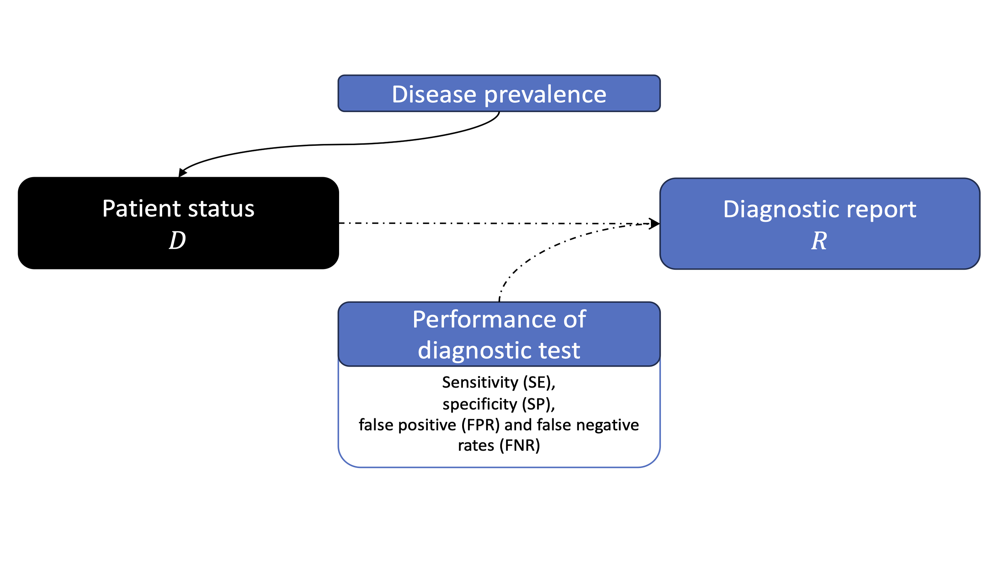
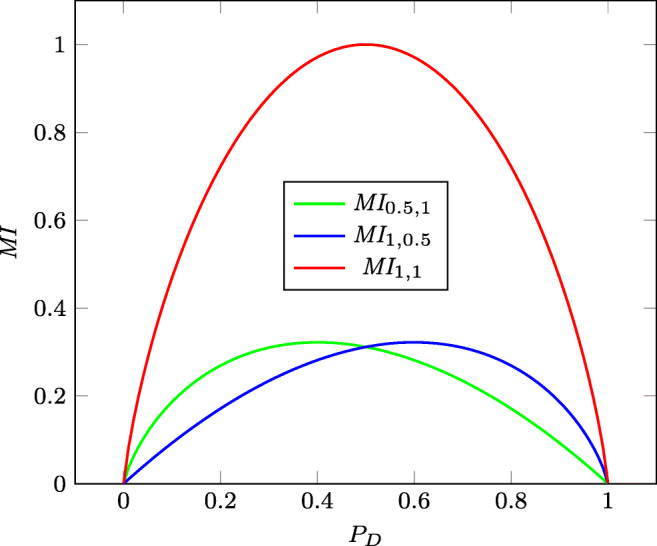
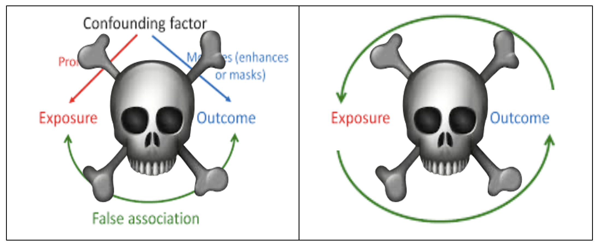

Statistical methods in information theory
and some clinical applications
Department of Biostatistics, University of Michigan
2023-12-15
About me
Information theory
Introduction
- Information theory (Shannon (1948)) is a branch of applied mathematics and electrical engineering that involves quantifying information.
- Original scope was to quantify namely data compression and error correction over a noisy channel.
- Now a fundamental concept in various fields, including biostatistics!
Some key information theoretic measures
Consider random variables \(X\) and \(Y\) with marginal probability functions \(p_X\) and \(p_Y\) with joint probability function \(p_{XY}\).
Mutual information
\[\begin{equation} MI(X, Y) := \sum_{x, y} p_{XY}(x, y) \log \left(p_{XY}(x, y)/ \left\{ p_X(x)p_Y(y) \right\} \right).\end{equation}\]
Entropy
\[\begin{equation} H(X) := \sum_{x} - p_{X}(x) \log \left( p_X(x) \right). \end{equation}\]
Properties
\(MI\) is symmetric and always non-negative.
\(MI = 0\) if and only if \(X\) and \(Y\) are independent; \(MI\) as a measure of stochastic dependence.
\(MI\) measures the quantity of information exchanged between the two random variables.; if \(MI = 0\) then \(X\) and \(Y\) do not exchange information.
\(H(X)\) measures the average uncertainty or randomness in \(P_X\).
Intuitively \(H(X)\) is linked to variability and \(MI\) is linked to association (or correlation).
Application I: evaluating diagnostic test performance
Translating information theory to medical diagnostics
We have a state of disease described by \(D\); it takes its value in the set \[S_D =\left\{d_1,\ldots,d_K\right\}.\]
We have \(R\) describing the outcome of a diagnostic test, taking its value in the set \[S_R =\left\{r_1,\ldots,r_M\right\}.\]
Key idea
- Diagnostic tests are evaluated on sensitivity (SE) and specificity (SP).
- \(MI\) serves as single statistical measure that can summarize the global quality of a dichotomous diagnostic test while incorporating information on SE and SP.
Simplifying assumptions
- There are only two mutually exclusive disease states \(D\): either present \((D = 1)\) or absent \((D = 0)\).
- There are only two mutually exclusive diagnostic outcomes \(R\): either positive \((R = 1)\) or negative \((R = 0)\).
Measuring the quality of a diagnostic test


:::
Key results
- \(MI\) between the diagnostic test \(D\) and disease status \(R\) depends on \(SE, SP,\) and prevalence of \(D\) (Casagrande, Fabris, and Girometti (2022)).
- This measure is subject to the prevalence, which is not always known (can get estimates from data, may be biased).
- For given SE and SP, we can evaluate the mutual information itself for any possible prevalence \(p\), denoted by \(MI_{SE, SP}(p)\).
- To define a prevalence-independent metric, we consider the measure \(MI(SE, SP) := \int_{[0, 1]} MI_{SE, SP}(p) dp.\)
Connection to ROC and AUC

- The \(MI_{SE, SP}(p)\) curve is analogous to the ROC curve.
- \(MI(SE, SP) := \int_{[0, 1]} MI_{SE, SP}(p) dp\) serves as an AUC analog.
- Given SE and SP for three COVID-19 antibody tests, we compare \(MI(SE, SP)\) and return a ranking of test efficacy.
\(MI\)-based evaluation of serology tests for COVID-19
| Euroimmun Anti-SARS-CoV2 ELISA IgG and IgA (ELISA) | Maglumi™ 2019-n-Cov IgG and IgM (CLIA) | 2019-nCoV IgG/IgM combined rapid test (LaboOn Time) | |
|---|---|---|---|
| Sensitivity | 0.844 | 0.631 | 0.719 |
| Specificity | 0.875 | 1.000 | 1.000 |
| \(MI(SE, SP)\) | 0.392 | 0.417 | 0.504 |
Key messages
- \(MI(R, D)\) is a measure of association between disease status \(D\) and diagnostic result \(R\). For a good diagnosis, \(MI(R, D)\) is expected to be high.
- Without observing disease status, can use historical data on \(SE, SP\) to express \(MI\) for possible prevalence \(p\), denoted by \(MI_{SE, SP}(p)\).
- A good test should do well regardless of prevalence, so a ‘good’ test will maximise \(MI(SE, SP) := \int_{[0, 1]} MI_{SE, SP}(p) dp.\)
- LaboOn Time >> CLIA >> ELISA.
Application II: causal discovery for drug development
Asymmetry mirrors underlying causal structures.1
A key question in causal discovery is whether \(X\) causes \(Y\) (\(X \rightarrow Y\))?
Challenge: Infer \(X \rightarrow Y\) or \(Y \rightarrow X\) based on observations \(\left\{X_i, Y_i \right\}_{i=1}^n\).

Motivating epigenetic problem